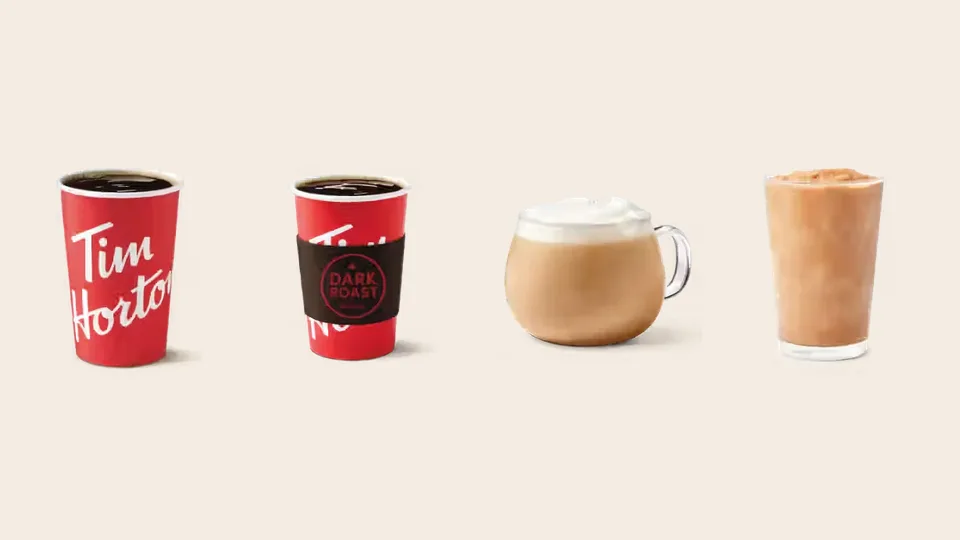

Unofficial fan guide - not affiliated with Tim Hortons
McCafé is cheaper and smoother black. Tims has more caffeine, cheaper lattes and the Iced Capp. Here is the full comparison.
Full Menu / Blog / Tim Hortons vs McDonald's Coffee

McDonald's brewed coffee is cheaper and tastes smoother black. A small McCafé coffee is $1 until January 2027, compared with $1.59 at Tim Hortons. Tim Hortons has more caffeine per cup and cheaper lattes and frozen drinks. With cream and sugar added, most people can't taste much difference.
Tim Hortons and McDonald's have fought over Canada's morning coffee since McDonald's launched McCafé here. In 2011 Tim Hortons sold more than 2.1 billion cups of coffee in Canada, and McDonald's sold about 200 million. McDonald's has been closing the gap with low prices and free-coffee promotions ever since.
This comparison uses our own Tim Hortons menu prices (Canadian dollars, before tax, October 2026), McDonald's Canada's official coffee price promise, a September 2026 Narcity taste test, and McCafé menu trackers for the drinks McDonald's doesn't price publicly.
| Tim Hortons | McDonald's (McCafé) | |
|---|---|---|
| House coffee | Original Blend, medium roast | Premium Roast, medium roast |
| Beans | 100% Arabica, blended and roasted in Canada | 100% Rainforest Alliance Certified Arabica (since 2019) |
| Small brewed coffee | $1.59 | $1.00 (price promise until Jan 2027) |
| Medium brewed coffee | $1.83 | $1.49 |
| Caffeine, medium | About 205 mg (14 oz) | About 145 mg (U.S. 16 oz figure) |
| Medium latte | $3.69 | About $4.49–$5.29 |
| Frozen coffee drink | Iced Capp, from $3.29 | Frappé, about $4.99–$6.99 |
| Restaurants in Canada | About 3,900 | 1,400+ |
| Rewards app | Tims Rewards | MyMcDonald's Rewards |
McDonald's is cheaper for plain brewed coffee, and Tim Hortons is cheaper for almost everything else. On January 13, 2026, McDonald's Canada promised to keep a small McCafé coffee at $1 for one year. That is 59 cents less than a small Tims coffee.
The gap is smaller in a medium. Narcity's September 2026 test paid $1.49 plus tax at McDonald's and $1.92 plus tax at Tim Hortons. Our Tims menu price for a medium is $1.83, so Tims prices vary a little by location.
| Drink | Tim Hortons (CAD) | McDonald's (CAD) |
|---|---|---|
| Small brewed coffee | $1.59 | $1.00 |
| Medium brewed coffee | $1.83 | $1.49 |
| Medium Americano | $2.79 | About $2.99–$3.49 |
| Medium latte | $3.69 | About $4.49–$5.29 |
| Medium cappuccino | $3.69 | About $4.49–$5.29 |
| Frozen coffee drink | $3.29–$4.29 (Iced Capp) | About $4.99–$6.99 (Frappé) |
The McDonald's prices beyond brewed coffee are ranges from McCafé menu trackers, because McDonald's prices vary by province and restaurant. Even the low end of each range is above the Tims price. If you drink lattes or Iced Capps, Tim Hortons is the cheaper habit. See our full Tim Hortons coffee menu for every size.
McDonald's tastes better black, and the two are close once you add cream. In Narcity's September 2026 test, the McDonald's coffee was "smooth, non-acidic" and the Tims coffee was "notably more acidic." The tester picked McDonald's overall, but only "by a small margin," and mostly because of the price.
Both chains brew a medium roast, but they taste different. McDonald's aims for a mild, smooth cup. A January 2026 review by The Spicy Chefs described Tims as "darker and more assertive," with a sharper finish. If you drink coffee black, you'll notice the difference most.
Most Canadians don't drink it black. The Double-Double, with two creams and two sugars, was the most-ordered hot drink at Tim Hortons in 2025. Once cream goes in, Narcity's tester said the two coffees were "virtually indistinguishable." Any McDonald's will make coffee with two creams and two sugars, but "Double-Double" is a Tim Hortons trademark.
McDonald's coffee tastes more similar from one location to the next, according to The Spicy Chefs. Their review found Tims varied more from store to store. That fits how Tims works: about 3,900 Canadian restaurants, almost all run by local franchisees.
Tim Hortons has more caffeine, by the best available estimates. A 14 oz medium Tims brewed coffee has about 205 mg. McDonald's Canada doesn't publish caffeine figures. U.S. data puts a 16 oz McDonald's medium at about 145 mg, which is 60 mg less in a bigger cup.
Per ounce, that's roughly 14.6 mg for Tims and 9.1 mg for McDonald's. The Tims figure comes from caffeine data the company published in 2008, and the McDonald's figure is for U.S. restaurants. Treat both as estimates. If caffeine is why you buy coffee, a Tims medium does the job of a McDonald's large. Our coffee menu lists Tims caffeine by size.
Both chains use Arabica beans. Tim Hortons' Original Blend is 100% Arabica, a medium roast blended from several growing regions and roasted in Canada. Tims sells the same blend in grocery stores, so you can brew it at home.
McDonald's Canada switched to 100% Rainforest Alliance Certified Arabica beans in July 2019, across all of its 1,400+ Canadian restaurants. The certification seal is printed on its hot cups. That makes McCafé the clearer choice if a certification seal on the cup matters to you.
Tim Hortons has the bigger coffee menu. It offers Original Blend, Dark Roast and Decaf, plus espresso drinks, iced coffee, cold brew, cold foam and the Iced Capp. McDonald's covers the basics well, including Premium Roast, iced coffee, lattes, cappuccinos, mochas and frappés.
The bigger difference is food. McDonald's sells muffins and breakfast sandwiches. Tim Hortons sells those too, plus a full donut and Timbits lineup, which is why Narcity's tester said Tims still makes sense when you're buying donuts too. For the drinks worth ordering, see our best Tim Hortons drinks.
McDonald's has the edge on speed. The Spicy Chefs said its drive-thru is built for fast service, while Tims slows down more at peak times. Narcity also liked McDonald's double-walled cups, which don't need a sleeve.
Tim Hortons has the edge on convenience. With about 3,900 Canadian locations, it has more than twice as many restaurants as McDonald's. Both chains run rewards apps that earn free drinks. Our Tim Hortons app guide explains how Tims Rewards works.
McDonald's made its big push into Canadian coffee in the late 2000s, when Tim Hortons dominated the market. In 2011 Tims controlled about 76% of Canada's baked goods and coffee market, and 8 out of 10 cups of coffee sold at quick-service restaurants came from Tims. Its 3,295 restaurants drew 26% of all restaurant traffic, compared with 10% for McDonald's 1,400.
McDonald's answered on price. In 2010 it started giving away free small coffees twice a year, aimed squarely at Tims' Roll Up the Rim contest. It began opening standalone McCafé locations in Canada in 2015. By 2018 it had doubled its share of the market to 13%. The $1 small coffee promise in 2026 is the latest move in the same fight.
Comparing Tims with other chains? See Tim Hortons vs Starbucks and Tim Hortons vs Dunkin'.
Yes, for brewed coffee. A small McCafé coffee is $1 in Canada until January 2027, and a medium is about $1.49. A small Tim Hortons coffee is $1.59 and a medium is $1.83. For lattes and frozen drinks, Tim Hortons is cheaper.
For black coffee, many testers say yes. Narcity's 2026 test found McDonald's smoother and less acidic. With cream and sugar, the two taste almost the same, so price and location usually decide it.
Tim Hortons, by the best estimates. A 14 oz medium Tims coffee has about 205 mg of caffeine, while U.S. data puts a 16 oz McDonald's medium at about 145 mg. McDonald's Canada doesn't publish caffeine figures.
McDonald's Canada promised on January 13, 2026, to keep a small McCafé coffee at $1 for one year. That runs to about January 2027. Prices at individual restaurants can still vary.
McDonald's Canada uses 100% Rainforest Alliance Certified Arabica beans for McCafé coffee and espresso. It made the switch in July 2019 in all Canadian restaurants.
Yes. Tim Hortons' Original Blend is a medium roast made from 100% Arabica beans, blended and roasted in Canada.
No. They use different blends and different suppliers. Both are medium-roast Arabica coffees, but McDonald's tastes milder and Tims tastes darker and more acidic.
Sometimes. McDonald's Canada has run free small coffee promotions since 2010, originally to compete with Tim Hortons' Roll Up the Rim. Check the McDonald's app for current offers.
Tim Hortons, by a wide margin. In 2011 it sold more than 2.1 billion cups of coffee in Canada, compared with about 200 million at McDonald's. McDonald's has grown its coffee sales since, but Tims is still Canada's biggest coffee chain by number of restaurants.
Black coffee from either chain has almost no calories: 3 to 5 at Tims and about 5 at McDonald's. The calories come from cream, sugar and syrups. A medium Tims Double-Double is 200 calories.
This is an independent, unofficial guide. It is not affiliated with, endorsed by, or sponsored by Tim Hortons, Restaurant Brands International or McDonald's. Tim Hortons prices come from our menu pages (Canadian dollars, before tax, as of October 2026). McDonald's brewed coffee prices come from its January 2026 price promise and Narcity's September 2026 test; other McCafé prices are ranges from menu trackers. See Sources.